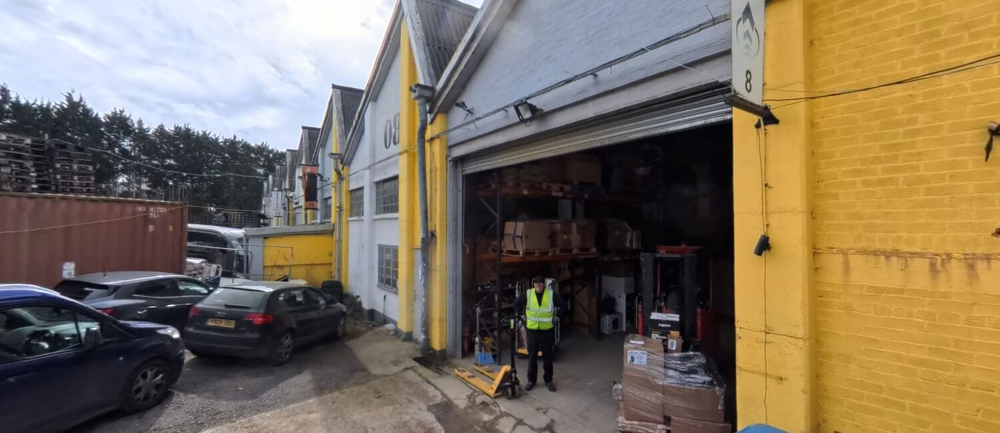
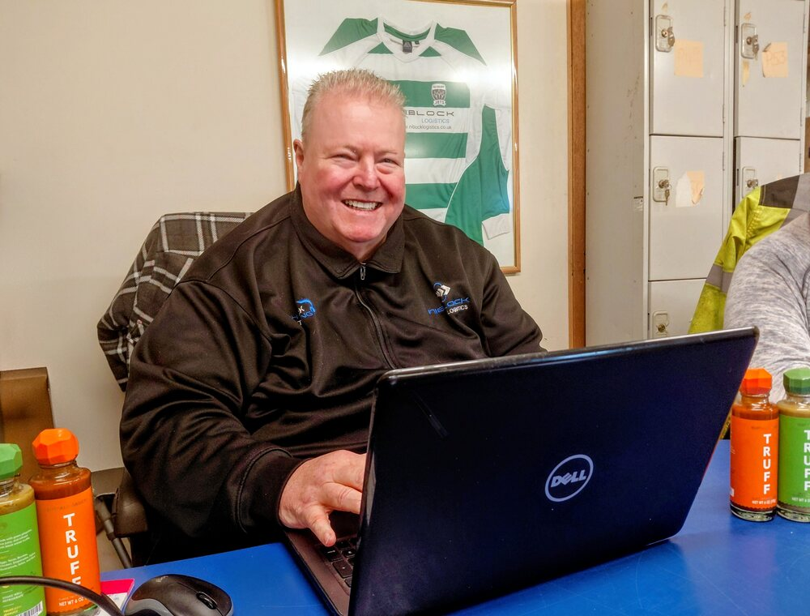

An established South East 3PL with blue-chip pedigree and an independent's personal care.
Get a free quoteFounded in 2005, Niblock Logistics Solutions started life as a logistics consultancy, led by Kevin Niblock — a principal consultant with over 35 years of industry experience. In 2006 we expanded into fulfilment to meet growing client demand, and we've been broadening our services ever since.
We're a family business, through and through. Today Niblock is run by Kevin's nephews, Simeon and George, with Kevin's son Harry helping out too. That's the real reason "big enough to cope, small enough to care" is more than a strapline — when you work with us, you're dealing with the family whose name is above the door.
Today, from our distribution centre at Gatwick Business Park, we provide end-to-end logistics — warehousing, e-commerce fulfilment, transport and distribution, and exhibition logistics — for businesses ranging from start-ups to global brands.
Our clients include FedEx Supply Chain Services, Hackett, East, Pepe Jeans, Specialised Storage Systems, Prestige Distribution and many more — from large corporations to small, fast-growing businesses.
We believe in supporting our community, and we're proud shirt sponsors of Edenbridge Rugby Club. We're also committed to greener logistics, introducing low-emission vehicles into our fleet to reduce our environmental impact while maintaining the highest level of service.

Whether you need advice or a full service, we'd love to help. Get a no-obligation quote today.
Get my quote